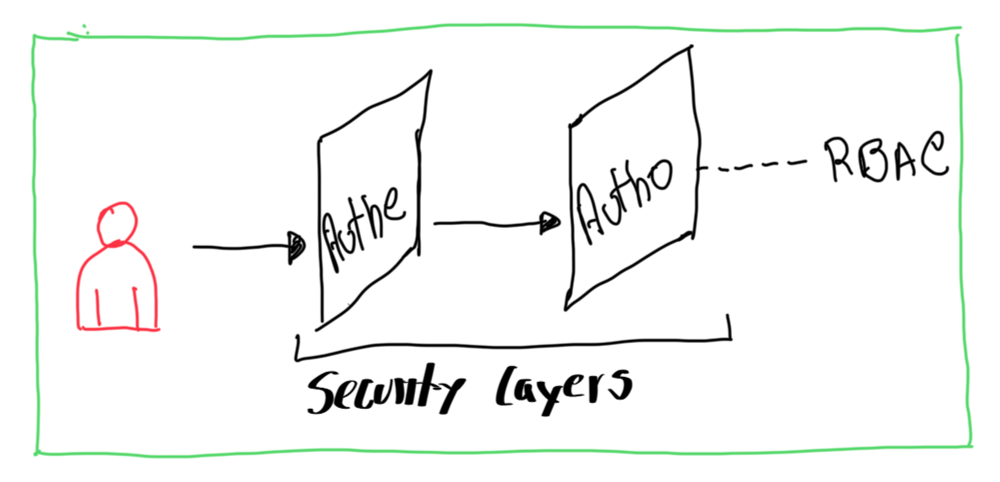
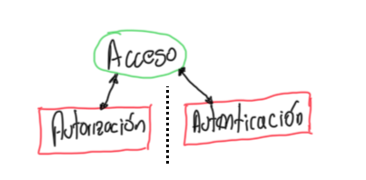

Capitulo 3 - Autenticación y Autorización
Configurar autenticación con un proveedor de identidad HTPasswd y asignar roles a ususario/grupos
- Configurar un proveedor de identidades HTPAsswd para la autenticación de OCP
- Definir controles de acceso basados en roles y aplicar permisos a usuarios.
Configurar Proveedor de Identidades
Muchos de lso recursos de OCP se relacionan con autenticación y autorización. La siguiente lista muestra los tipos de recursos primarios y otras definiciones:
| Tipo de Recurso Primario |
Descripción |
|---|---|
| user | El recurso tipo usuarios son indentidades en OCP que interactúan con el API Server y representa un actor en el sistema. Se asigna permisos por roles directamente a él o a un grupo al que pertenece |
| identity | El recurso de identidades ayuda a mantener el registro de los intentos de autenticación de un usuario de algún proveedor de identidades. todo dato se almacena |
| Service Account | El recursos cuenta de servicio es para cominicar las aplicaciones con la API independientemente cuando las credenciales de usuario no son necesarias. Ejemplo: la credenciales de usuario no se comparten y se pasan las cuentas de servicio |
| Group | El recurso grupos repesenta un conjunto de usuarios. Los usuarios se asignan a grupos. OCP provee grupos de sistema o virtuales aprovisionados automaticamente por el clúster |
| Role | El recurso role define las operaciones API que el usuario puede hacer en un recurso determinado. Los roles se pueden asignar a usuarios grupos y cuentas de servicio |
Authenticating API Requests
La autenticación y la autorización son capas de seguridad habilitadas para un usuario interactuar en un clúster.

El API de OCP tiene 2 mpetodos para las solicitudes de autenticación
- Accesos de token OAuth
- Certificados cliente X.509
Operador de Autenticación
OCP tiene o provee el operador de Autenticación que se ejecuta en un servidor de OAuth. Este provee tokens de acceso a los usuarios que intentan autenticar y el debe estar configurado con un proveedo de identidades.
Proveedor de identidades
Un servidor OCP OAuth se puede configurar con muchos proveedores de identidades, entre ellos:
| Proveedor de Identidades | Descripción |
|---|---|
| HTPasswd | Validación de usuario/password contra un secret que los tiene almacenados con el comando htpasswd |
| Keystone | Autenticación compartida habilitada con servidor OpenStack Keystone v3 |
| LDAP | Proveedor LDAP de usuarios/passwords de un server con LDAPv3 usando autenticación bind |
| GitHub or GitHub Enterprise | Se puede configurar GitHub como proveedor de identidades |
| OpenID Connect | Se puede integrar usando Autorización Code Flow |
Autenticando como Admin Clúster
Antes de iniciar la configuración con con un proveedor de identidades, se debe acceder al clúster de OCP como administrador. Una instalación nueva tiene 2 opciones de autenticación por solicitud al API. La primera es a traves de el archivo kubeconfig el cual incluye un certificado x509 que nunca expira. El otro camino es a traves de kubeadmin desde un servidor virtual. Una correcta autenticación otorga un token con acceso
Autenticando con certificado X.509
Durante del proceso de instalación de OCP se crea un archivo único kubeconfig en el directorio auth. Este archivo tiene en detalle los parámetros para relaizar una conexión CLI como cliente hacia el API del server, e incluye el certificado X.509.
Los logs de instalación está la ruta, es tipo info
INFO Run 'export KUBECONFIG=/root/auth/kubeconfig' to manage the cluster with 'oc'.
Para acceder a la granja de OCP, se exporta el path de del kubeconfig tal como se ve en el LOG y luego puede ejecutar un oc get nodes para verificar. Como alternativa puede usar el argumento --kubeconfig para describir el path, así:
oc --kubeconfig /home/user/auth/kubeconfig get nodes
Autenticando con usuario vitual kubeadmin
Despues de una completa instalación, OCP crea un usuario virtual kubeadmin. El secret esta tipo hash. El proceso de instalador genea un password aleatorio y unico para la administración del clúster y en los logs de instalación se puede el usuario, el password y la URL de acceso a la consola
Eliminando el usuario virtual
Luego de definir un proveedor de identidad, cerar usuario y asignarle el role de admin clúster, se puede eliminar el usuario kubeadmin
oc delete secret kubeadmin -n kube-system
Si antes de eliminar no se cuenta con un usuario con role Admin o no se tiene una copia del archivo kubeconfig la alternativa de acceso es destruir y reinstalar el cluster
Gestionando usuarios con el proveedor de identidad HTPasswd
Gestionar las credenciales de un usuario con el proveedor de identidades requiere la creación de un archivo temporal HTPasswd el cual se modifica y luego se aplica los cambios.
Creando el archivo HTPasswd
htpasswd -c -B -b /tmp/htpasswd eocampo myp4ssw0rd
La opción -c reempaza el contenido del archivo si este ya existe. Con la opción -b se actualiza el password y con solo la opción -D se eliminan las credenciales
Creando el secret de HTPasswd
Cuando se usa el proveedor HTPasswd, se debe crear un secret que contenga los datos del archivo htpasswd.
oc create secret generic htpasswd-secret --from-file htpasswd=/tmp/htpasswd -n openshift-config
NOTA Un secret que tiene el IdP (Identity Provider) HTPasswd debe tener el prefijo htpasswd= antes de especificar la rurta del archivo
Extrayendo los datos del secret
Cuando se agregan o remueven usuarios se tiliza el comando oc extract para recuperar el secret. Por defecto el comando guarda cada llave del secret en un archivo separado, sin embargo se puede reubicar la salida de todos las llaves a un solo archivo, asi:
oc extract secret/htpasswd-secret -n openshift-config --to /tmp/ --confirm
Actualizandoel secret del HTPasswd
El secret se debe actualizar luego de adicionar, modificar o incluso eliminar un usuario y se puejde hacer con el comando oc set data secret para actualizar. A menos que el nombre del archivo no sea htpasswd se debe especificar, asi:
oc set data secret/htpasswd-secret --from-file htpasswd=/tmp/htpasswd -n openshift-config
Una ves actualizado el secret el operador OAuth re-despliega los pods del namespace openshift-authentication. Se puede monitorrear asi:
watch oc get pods -n openshift-authentication
Configurando el IdP HTPasswd
El IdP valida los usuarios contra un secret que contiene los nombres de usuario y contraseñas y solo el Admin del Clúster puede modifcar los datos.
Configurando el recurso OAuth tipo personalizado
Para usar el IdP HTPasswd, la personalización del recurso OAuth debe editarse para agregar una entrada a la matriz de .spec.identityProviders
apiVersion: config.openshift.io/v1
kind: OAuth
metadata:
name: cluster
spec:
identityProviders:
- name: my_htpasswd_provider
mappingMethod: claim
type: HTPasswd
htpasswd:
fileData:
name: htpasswd-secret
| entry | explicación |
|---|---|
| - name: my_htpasswd_provider | Nombre del IdP |
| mappingMethod: claim | La opción claim no permite el inicio de sesión con diferentes IdP |
| name: htpasswd-secret | secret existente que contiene los datos |
Actulizando el recurso personalizadode OAuth
Primero se exporta el contenido a un yaml con el comando get . En el output generado se edita para modificar los cambios del IdP y sus configuraciones y al completarse se guardan los cambios y luego se reemplaza con el comando replace así:
oc get oauth cluster -o yaml > oauth.yaml
oc replace -f oauth.yaml
Eliminando usuarios e IdP
- Elimiando un usuario del
httpsswd
htpasswd -D /tmp/htpasswd manager
- Actualizar el secret eliminando que queda del password del recurso del usuario
oc set data secret/htpasswd-secret --from-file htpasswd=/tmp/htpasswd -n openshift-config
- Eliminar el usuario
oc delete user manager
- IdP, se busca el IdP en el clúster y luego se elimina:
oc get identities | grep manager
oc delete identity my_htpasswd_provider:manager
Asignación de privilegios de administración
adm policy add-cluster-role-to-user cluster-admin eocampo
Documentación
Definir y aplicar permisos con RBAC
Definir controles de acceso basados en roles y aplicar permisos a usuarios
RBAC (Role-based Access Control)
RBAC es una técnica para gestionar acceso a los recursos es un sistema de cómputo. En OCP, RBAC determina que acciones se pueden ejecutar dentro de un Clúster o proyecto. Se pueden elegir entre 2 tipos de role, dependiendo del nivel de responsabilida del usuario: cluster y local

Proceso de autorización
Este es gestionado por reglas, roles y enlaces
| Objeto RBAC | Descripción |
|---|---|
| Rule | Permite acciones sobre objetos o grupo de objetos |
| Role | Conjunto de reglas. Los usuarios y grupos se pueden asociar a varios roles |
| Binding | Asignación de usuarios/grupos a un role |
Alcance de RBAC
RHOCP tiene definido 2 tipos de nivel de grupos que depende del alcance y responsabilidad
- Cluster RBAC: Roles y enlaces aplicados a través de todos los objetos
- Local RBAC: Roles y enlaces para un proyecto determinado. Los enlaces de role local puede refernciar ambos: cluster o local.
Gestionando RBAC con CLI
Utiliza el comando oc adm policy para agregar o eliminar roles del cluster
Cambiar usuario normal a administrador del cluster y luego ejemplo para removerlo
oc adm policy add-cluster-role-to-user cluster-admin eocampo
oc adm policy remove-cluster-role-from-user cluster-admin eocampo
Para saber si el usuario puede ejecutar una acción se utliza el comando oc adm policy who-can así:
oc adm policy who-can delete eocampo
Roles por default
Por defecto el cluster de OCP tiene roles que pueden ser asignados localmente en todo el clúster, lo cuales se pueden modificar ser mas precisos en la asignación del contrtol de acceso a los recursos
| Default Role | Descripción |
|---|---|
admin |
Puede gestionar todos los recursos de un proyecto, incluyedo otorgar acceso a otros usuarios. Otorga acceso a los recursos de un proyecto incluyendo limits y quotas |
basic-user |
Acceso de solo lectura al proyecto |
cluster-admin |
Superusurio ya que tiene acceso a los recursos del Clúster. Puede hacer cualquier acción |
cluster-status |
Acceso a la informción de estado del clúster |
cluster-reader |
Acceso y/o vista a la mayoría de objetos en el clúster, pero no modificarlos |
edit |
Crear, modificar y eliminar recursos comunes de la app de un proyecto (services, deplyments). No puede realizar acciones sobre recursos de gestión [limits, quotas], tampoco gestionar permisos de acceso al proyecto. Acceso tipo desarrollador |
self-provisioner |
Pueden cerar sus propios proyectos. Permite crear recursos projectrequests |
view |
Pueden ver los recursos de un proyecto sin modificarlos |
Agregar un role a un usuario específico:
oc policy add-role-to-user role-name eocampo -n miproyecto
Tipos de usuarios
| Tipos de usuarios | Descripción |
|---|---|
| Regular users | Son los usuarios con mas interacción y se representan como User |
| System users | Creados automaticamente con la definición de la infra. Principalmente para la seguridad de la infraestructura e interacción con la API cluster adminitrator Utiliza el prefijo system: por ejemplo system:admin |
| Service accounts | Usuario de sistema asociados con proyectos. Los Workloads pueden usar service account para conectarse a APIs de K8S Se podría crear de forma automática momento de cerar un poryecto No tiene roles Se otorga roles a los service account Se representa como ServiceAccount tiene el prefijo system:serviceaccount:default:eocampo (default is a namespace) |
Gestión de grupos
Crear un grupo en el clúster:
oc adm groups new ocampos
Agregar usuarios al grupo:
oc adm groups add-users ocampos eocampo